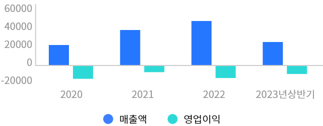

공모주정보

두산로보틱스
(454921)
사업개요
- 협동로봇 제조 및 솔루션 전문 기업
- 기계 및 장비 전문 기업인 두산의 계열회사
- 협동로봇 시장에서 국내 1위 및 글로벌 4위 차지
- 제품 라인업 총 13개로 글로벌 상위 업체 대비 제품군 다양
- 협동로봇 제품군은 업계 최고 수준의 안전 등급 인증 받음
- 북미 및 유럽 등 글로벌 판매 채널 확보
- 2023년 상반기 기준 해외 매출 비중 60% 수준
- 주요 제품 매출 비중은 2023년 상반기 기준으로 협동로봇
- 90.2%, 커피 모듈 6%, 기타 3.8%로 구성

주력사업
- 협동로봇은 직원들과 같은 작업 공간에서 일하도록 설계된 로봇
- 일반적으로 6축 이상의 관절로 구성된 로봇팔을 의미
- 협동로봇은 산업용 로봇과 달리 산업용과 비산업용에 모두 사용 가능하며 25kg 미만의 가벼운 무게가 특징 가벼운 무게로 다양한 산업 및 생활에 안전하게 적용 가능
- 현존하는 협동로봇 중 가장 무거운 중량을 운반할 수 있는 H시리즈(가반하중 20 ~ 25kg)를 글로벌 최초로 출시하여 가반하중 5 ~ 25kg를 모두 커버하는 라인업 완성
- 주력사업인 협동로봇 외 커피 및 튀김과 같은 솔루션 사업 매출의 신규 발생 기대
| 품목 | 설명 |
|---|---|
| M 시리즈 | 두산로보틱스의 첫 협동로봇 |
| A 시리즈 | 동사 라인업 중 가장 가반하중이 가벼움 |
| H 시리즈 | 가장 무거운 중량을 운반할 수 있는 제품 |
| E 시리즈 | 이동 및 설치 용이, 저렴한 가격이 특징 |
| 팔레타이징 | 이동형으로 자유로운 이동/설치 가능 |
전방산업
1. 글로벌 협동로봇 시장의 고성장 예상
- 글로벌 협동로봇 시장 규모는 2022년 기준 약 1.2조원 2030년에는 12조원 규모로 성장할 것으로 전망
- 최근 다양한 분야의 서비스 산업에서 로봇을 비용 절감 해법으로 인식하고 있어 협동로봇의 수요 증가세
- 협동로봇은 제조업뿐 아니라 성장률이 상대적으로 높은 서비스 산업에서 활용도가 높아 중장기 성장 예상
- 현재 협동로봇은 전통적인 산업용 로봇이 사용하기 어려운 시장 중심으로 개화 중(ex, 조리 로봇 등)

2. 제조업 및 서비스 시장에서 협동로봇의 필요성 확대
- 제조업 분야에서 위험하거나 힘든 공정, 반복적인 단순작업 중심으로 협동로봇의 적용 비중 증가세
- 무겁고 반본적인 작업에서는 H시리즈 및 M시리즈 유용
- 가볍고 세밀한 작업에서는 M시리즈와 A시리즈 유용 서비스 분야의 주요 활용처는 F&B(식음료), 의료, 엔터 등 전문 서비스 분야 중심으로 활용도 높아지는 추세 특히, 인건비 축소를 위해 F&B 분야에서 성장 가속화

재무현황
1. 글로벌 협동로봇 시장의 고성장 예상
- 2020년 매출액은 202억원, 2023년 상반기 기준 매출액은 237억원으로 매출액은 꾸준히 성장 중
- 영업이익은 적자 지속
- 공격적인 해외 마케팅 확대와 개발 활동 강화에 따른 R&D 비용 증가 등의 영향으로 수익성은 부진
- 지속적인 매출 성장 및 원재료 공급 채널 다원화를 통한 원가절감 추진 등 수익성 회복을 위한 노력 시사

투자포인트
1. 주가 상승 요인
-
협동로봇 시장 성장에 따른 동반 성장 예상
전 산업에 걸쳐 다양한 고객을 보유 중이며 다양한 분야에서 레퍼런스 확보
다양한 제품 라인업 보유로 시장 점유율 상승 및 높은 제품 퀄리티와 가격 경쟁력 확보 등 지속적인 점유율 상승 예상 -
판매채널 확대를 통한 실적 성장 예상
2018년 판매채널 19개에서 2022년 89배로 4배 가까이 성장했으며 2026년 219개로 확대할 계획
- 로봇 생태계 확장 및 M&A를 통한 기술 고도화 추진으로 중장기 성장 기대감 확대
2. 주가 하락 요인
-
단기적인 실적 부진
중장기 성장을 위한 마케팅 확대와 R&D 비용 등의 증가로 단기적으로 실적 부진할 가능성 존재
-
글로벌 경기 위축 우려
제조업 및 서비스 업종 동향에 영향을 받는 만큼 글로벌 경기의 위축은 영업환경에 부정적인 영향을 미칠 수 있음
-
원자재 가격 변동 위험
주요 원자재인 알루미늄, 희토류, 반도체 소자 등의 가격이 상승할 경우 수익성 우려 존재